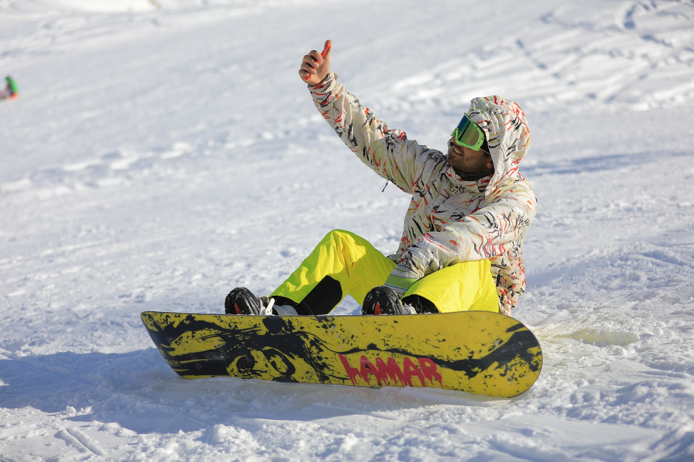
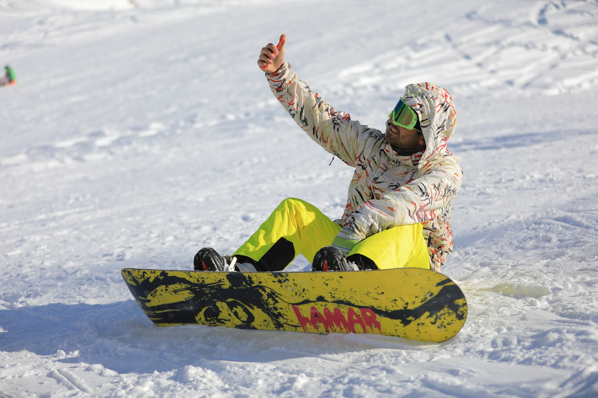

The Beginning
Snowboarding is a recreational and competitive activity that involves descending a snow-covered surface while standing on a snowboard that is almost always attached to a rider's feet. It features in the Winter Olympic Games and Winter Paralympic Games. Snowboarding was developed in the United States, inspired by skateboarding, sledding, surfing, and skiing. It became popular around the world, and was introduced as a Winter Olympic Sport at Nagano in 1998 and featured in the Winter Paralympics at Sochi in 2014. As of 2015, its popularity (as measured by equipment sales) in the United States peaked in 2007 and has been in a decline since.

The first snowboards were developed in 1965 when Sherman Poppen, an engineer in Muskegon, Michigan, invented a toy for his daughters by fastening two skis together and attaching a rope to one end so he would have some control as they stood on the board and glided downhill. Dubbed the "snurfer" (combining snow and surfer) by his wife Nancy, the toy proved so popular among his daughters' friends that Poppen licensed the idea to a manufacturer, Brunswick Corporation, that sold about a million snurfers over the next decade. And, in 1966 alone, over half a million snurfers were sold.
 
